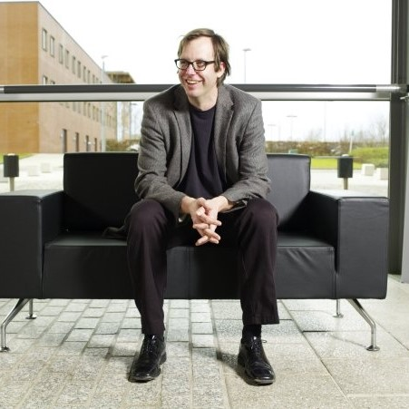
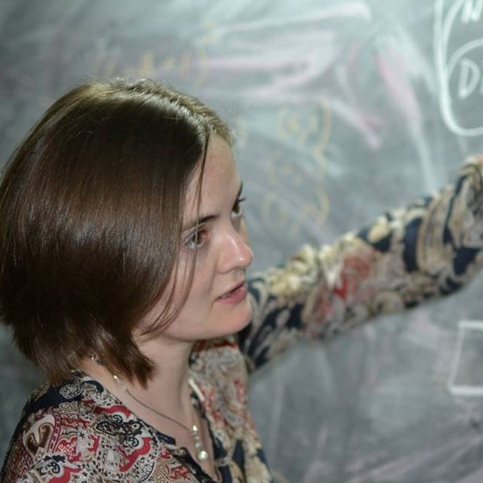

Meet the Professors
-

[1]
Professor David Pym
Professor of Information, Logic, and Security at UCL, Head of PPLV Group
As the head of the UCL PPLV Group, Professor David Pym has experience in both theoretical research and the development of mathematical modelling methods to help understand the nature of systems[2]. Most notably, Professor Pym led the three and a half year project on Resource Reasoning[3] which you can learn more about on our Research page.
Professor David Pym's interests also lie in security where he looks into the politics and economics of security[2], asking questions like 'How much should a company spend on security?'.
After speaking with him personally, we can confirm his love for logic and passion for his research area. -

[4]
Professor Byron Cook
Professor of Computer Science at UCL and Director at Amazon Web Services
Professor Bryon Cook has an interest in a great range of areas including computer/network security, program analysis/verification and biological systems[5] - along with many more. While carrying out research as a Professor of Computer Science at UCL, he is also a Director at Amazon Web Services. Here, Professor Bryon Cook leads a research group focused on cloud-computing security.[5]
In the past, Bryon Cook was also a researcher at Microsoft Research (joint appointment with UCL) where he worked as a software developer in the Microsoft Windows OS kernel team. Professor Cook is also the founder of many projects including the TERMINATOR program and Microsoft's SLAyer project.[5] -
[6]
Professor Peter O'Hearn
Professor of Computer Science at UCL and Research Scientist at Facebook
At Facebook, Professor Peter O'Hearn acted both in a director and technical role and currently works on the science and engineering of program verification and analysis.[7] Famously, Professor O'Hearn led the Infer program (where you can find out more on our Impact page) and co-founded Monoidics, a software verification startup company, which was acquired by Facebook in 2009[7].
At UCL, Professor Peter O'Hearn has developed several new logics: Bunched Logic, with Professor David Pym, and Concurrent Separation Logic - for which he received the 2016 Gödel Prize.[7] -

[8]
Professor Alexandra Silva
Professor of Algebra, Semantics, and Computation at the PPLV Group, UCL
Professor Alexandra Silva has a broad range of research interests: formal languages, coalgebra, algorithms, verification, formal methods and automata learning.[9]
Recently, Professor Alexandra Silva was the winner of the EATCS Presburger Award 2017[3] for her work in coalgebra (a mathematical framework established in recent decades), was awarded the 2016 Philip Leverhulme Prize for her research on semantics of programming languages and development of algorithms, and received a €1.5 million ERC starting grant.[3]
Professor Alexandra Silva is certainly a winner.[4]
Professor David Pym talks about some of his colleagues and their work.